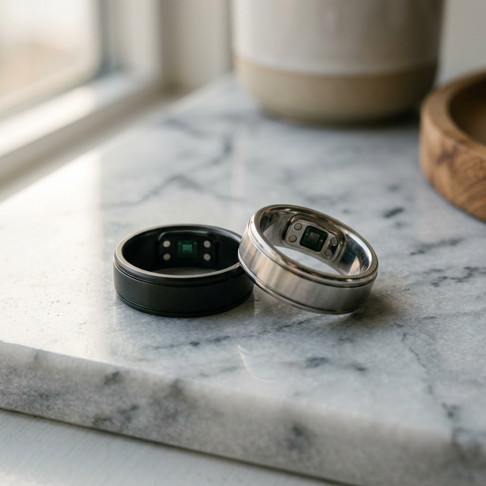

RingConn Gen 2 vs. Oura: Which Smart Ring Actually Earns Its Spot on Your Finger?
The Smart Ring Dilemma: Data Empowerment or Subscription Fatigue?
You’ve decided to take control of your health. You want the deep insights into your sleep, recovery, and activity that only a smart ring can provide—without the bulk of a traditional smartwatch. But now you face a frustrating crossroads: Do you go with the legacy name, or the innovative challenger that is rewriting the rules of the industry?
The choice between the RingConn Gen 2 and the Oura Ring isn't just about aesthetics. It’s a choice between two different philosophies of health tracking. One offers a polished ecosystem locked behind a monthly paywall, while the other provides medical-grade precision and industry-leading battery life with zero recurring costs. If you are tired of being 'rented' your own health data, you are in the right place.

| Feature | RingConn Gen 2 | Oura Ring (Gen 3) | The Verdict |
|---|---|---|---|
| Monthly Subscription | $0 (Forever Free) | $5.99/month | RingConn Wins |
| Battery Life | Up to 10-12 Days | Up to 7 Days | RingConn Wins |
| Thickness | 2.0mm (Ultra-Thin) | 2.55mm | RingConn Wins |
| Sleep Tracking | Advanced AI + OSA Monitoring | Industry Standard | Tie |
| Charging Case | Included (Portable Power Bank) | Desktop Dock Only | RingConn Wins |
RingConn Gen 2: The New Gold Standard for High-Intent Users
When the original RingConn hit the market, it shook the industry by proving that premium health tracking didn't require a subscription. The RingConn Gen 2 takes that disruption to a whole new level. It is thinner, lighter, and more intelligent than anything we have seen in this category.
Why the RingConn Gen 2 is Dominating the Conversation
- True Subscription-Free Ownership: Unlike its competitors, RingConn believes that once you buy the hardware, you own the data. You get full access to every metric, trend, and AI-driven insight without a monthly bill hitting your credit card.
- The Thinnest Profile on the Market: At just 2.0mm thick, the Gen 2 is significantly more comfortable for 24/7 wear. You’ll forget it’s even there until you check your stats.
- Unrivaled Battery Longevity: While most rings struggle to make it through a week, the RingConn Gen 2 pushes the boundaries to 10-12 days. Combined with its portable charging case (which can recharge the ring multiple times), you can go a full month without plugging into a wall.
- Next-Generation Sleep Science: RingConn Gen 2 introduces advanced monitoring for Obstructive Sleep Apnea (OSA) markers, providing a level of health security that goes far beyond basic step counting.
Oura Ring: The Established Veteran
Oura has been the face of the smart ring world for years. Their software is incredibly polished, and their "Readiness Score" has become a staple for biohackers. However, the landscape has changed. Users are increasingly vocal about "subscription fatigue." After paying a premium price for the ring, being asked to pay an additional ~$72 per year just to see your heart rate trends is a bitter pill for many to swallow.
While Oura offers a great ecosystem, the hardware has remained relatively stagnant in terms of thickness and battery life compared to the rapid innovation seen in the RingConn Gen 2.
The Critical Comparison: Precision and Comfort
When you wear a device 24/7, comfort is king. The RingConn Gen 2 utilizes a slightly "squircle" interior design that prevents the ring from rotating, ensuring the sensors stay perfectly aligned with your finger's blood vessels. This leads to higher data fidelity during sleep and intense workouts.
Furthermore, the RingConn app provides a comprehensive "Wellness Balance" score. This doesn't just tell you that you're tired; it analyzes the *why*—looking at the relationship between your stress levels, sleep quality, and physical activity over a rolling 7-day period.
The "Hidden" Cost of Oura
Over three years of ownership, an Oura ring will cost you the retail price plus over $200 in subscription fees. The RingConn Gen 2 costs you exactly what you pay at checkout. For the high-intent buyer who values both financial intelligence and physiological data, the math simply favors RingConn.
Final Verdict: Which Should You Buy?
If you are looking for the most advanced, comfortable, and cost-effective smart ring available today, the RingConn Gen 2 is the clear winner. It outperforms the competition in battery life, physical dimensions, and long-term value.
Choose RingConn Gen 2 if:
- You want the thinnest and lightest ring available.
- You refuse to pay a monthly subscription for your own health data.
- You want a battery that lasts over 10 days.
- You want advanced features like sleep apnea monitoring markers.
Stop renting your health data. Join the thousands of users who have made the switch to a more sustainable, more advanced way of tracking their wellness.